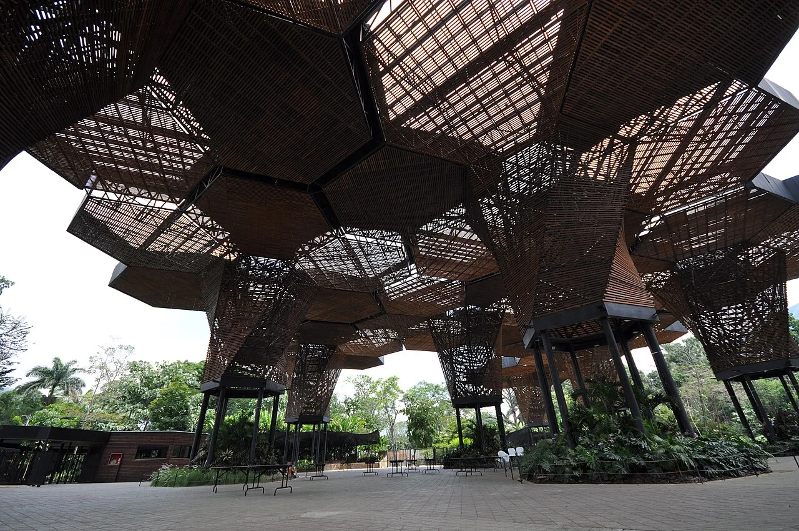

Veinte años después de su construcción en 2006, el Orquideorama permite examinar una decisión que sigue siendo pertinente: cómo cubrir un lugar sin separarlo del jardín. AGENdA describe diez módulos árbol-flor, cada uno compuesto por siete hexágonos y con el central abierto como jardín-patio. La repetición ordena el conjunto; los vacíos permiten que el jardín participe en él. [2]
Plan:b identifica como autores a Felipe Mesa y Alejandro Bernal, en sociedad con Camilo Restrepo y J. Paul Restrepo. AGENdA sitúa el concurso en 2005 y la construcción en 2006. La colaboración y la secuencia del encargo forman parte de la explicación del sistema. [1] [2]
El hexágono permite extender una trama por repetición. El proyecto introduce un vacío en el centro de cada módulo y convierte esa regla geométrica en una organización espacial: cubierta alrededor, jardín-patio en el interior. La apertura tiene una posición dentro del sistema. Así, lo descubierto participa del orden de la obra con tanta precisión como la estructura que lo rodea.
La memoria de Plan:b distingue columnas y cerchas metálicas, revestimientos de madera cultivada, adoquines de concreto y componentes de cubierta metálicos y de policarbonato. El centro de cada módulo concentra instalaciones, jardines, acceso de lluvia y salida de aire caliente. La geometría reúne soporte, servicios y apertura en una misma unidad. [1]


Reunir soporte, instalaciones y apertura en una misma unidad reduce la separación entre decisiones que suelen estudiarse por partes. Ese es el interés de su economía de diseño: observar cuánto resuelve cada operación. La valoración ambiental requiere otra evidencia. Habría que conocer la procedencia y reposición de los componentes, los consumos y el mantenimiento durante la vida del edificio. La madera visible, por sí sola, no responde esas preguntas.
En Medellín, la relación con el ambiente puede examinarse sin convertir el proyecto en una demostración de superioridad energética. Los claros interrumpen el techo y conservan entradas de cielo. La trama de madera introduce una escala menor bajo la estructura. Nuestra lectura encuentra ahí una decisión pertinente: el espacio se organiza desde la convivencia entre lo cubierto y lo abierto, en lugar de tratar la vegetación como un elemento que se añade después.
La renovación del Jardín Botánico de 2005–2007 situó esta obra dentro de una intervención más amplia sobre áreas verdes, recorridos peatonales y conexiones con Carabobo y Parque Explora. Ese contexto impide leerla como una forma autosuficiente: su disponibilidad depende también de cómo se llega a ella y de la institución que sostiene el jardín. [3]
El programa pertenece a una institución donde conviven investigación, conservación, educación y actividades culturales. Una cubierta destinada a exposiciones de jardines debe responder a esos usos sin convertir las plantas en escenografía. Su flexibilidad se puede discutir desde una pregunta concreta: qué actividades admite la estructura y qué condiciones del jardín necesita preservar cuando cambian los acontecimientos.
La posibilidad de reunirse depende de lo que sucede bajo la cubierta: sombra, protección, recorridos, accesibilidad y condiciones para quedarse. También requiere programación y mantenimiento. La forma abierta ofrece una disposición espacial que puede alojar encuentros; sostenerlos exige decisiones institucionales. Evaluar una obra pública supone estudiar esa relación entre el lugar construido y el trabajo que permite utilizarlo.
El paso del tiempo deja algunas huellas documentales concretas. El balance institucional publicado por el Jardín el 15 de julio de 2019 incluye mantenimiento del Orquideorama entre sus intervenciones. No detalla qué componentes se repararon ni permite reconstruir una historia completa de conservación. [4]
La muestra comercial de la Fiesta del Libro de 2026 sitúa editoriales, grupos y entidades en el sector Q del Orquideorama. El documento prueba un uso programado reciente; no mide confort ni asistencia. Basta, sin embargo, para sacar el aniversario de la fotografía de inauguración: la cubierta sigue organizando una situación cultural dentro del Jardín. [5]


Entre la descripción original y estos registros hay una diferencia que conviene conservar. Las memorias explican qué se quiso resolver; los documentos posteriores muestran mantenimiento y programación en momentos determinados. Faltan los registros de reparaciones, observaciones de lluvia y calor y conversaciones actuales con quienes trabajan y visitan el lugar. Esa ausencia delimita el juicio: hablamos de la vigencia de una manera de proyectar, sin presentar como demostrado su desempeño durante dos décadas.
Para aprender de esta obra conviene seguir la relación entre módulo, estructura, cubierta y vacío. Copiar sus hexágonos en otro lugar dejaría sin resolver las preguntas que justifican el sistema: qué clima recibe, qué actividades protege y qué capacidad existe para construirlo y mantenerlo. Lo transferible es la manera de coordinar esas condiciones; la forma tendría que volver a discutirse en cada proyecto.
El aniversario merece celebrar esa contribución al diseño y hacer visible el trabajo que la prolonga. Una cubierta organiza aquí un lugar de encuentro sin ocuparlo por completo. Sus veinte años invitan a mirar, junto a la inteligencia del sistema, las reparaciones, los usos y las decisiones que conservan esa apertura. El proyecto puede estudiarse en los planos; su continuidad necesita leerse también en el cuidado del lugar.
Fuentes.
- Plan:b — memoria y ficha técnica
- AGENdA — concurso, módulos y construcción
- Jardín Botánico — historia de la renovación
- Jardín Botánico — balance institucional, 15.07.2019
- Fiesta del Libro 2026 — expositores del Orquideorama
Ensayo de crítica de diseño. Datos de proyecto y registros institucionales posteriores; sin visita, entrevistas ni evaluación técnica actual. Las fotografías son históricas.
Fuentes consultadas el 13.11.2026. Interpretación y edición: RUMMOR. Edición de prueba para revisión.